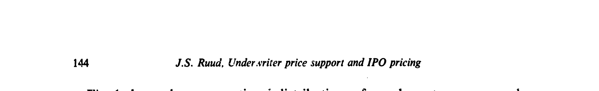
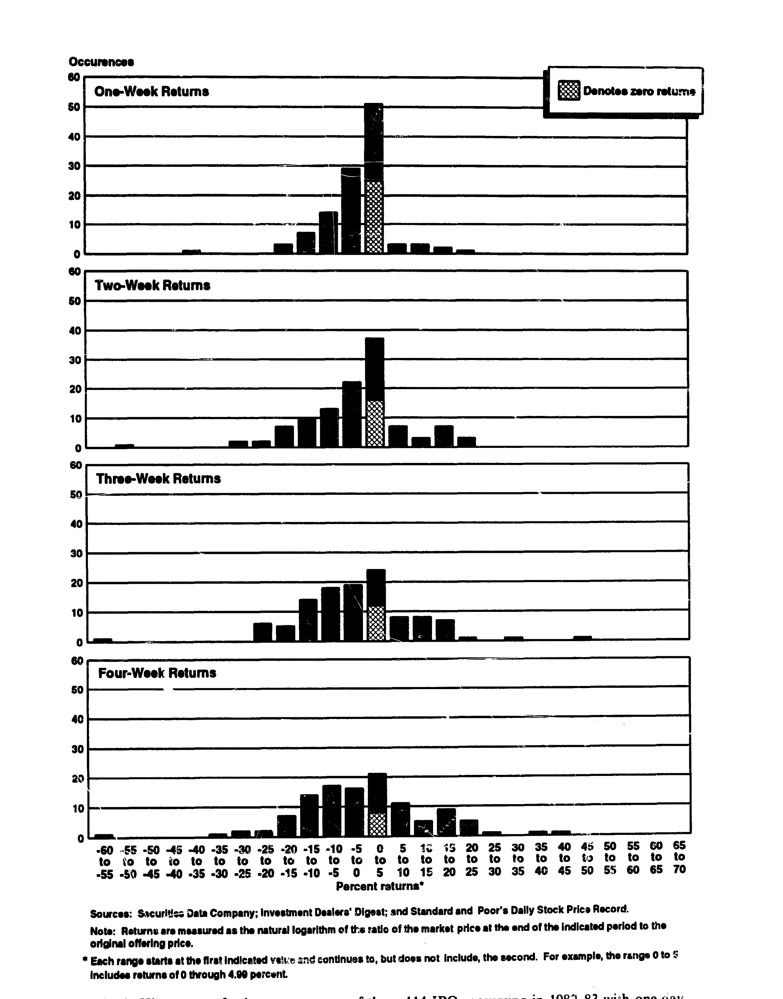
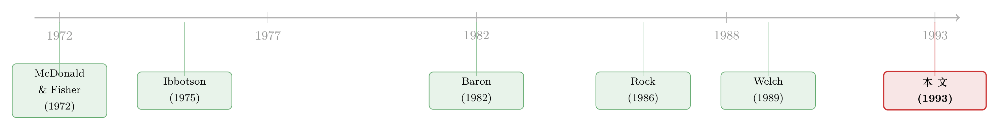

新股「打折」之谜，也许根本就不存在——是有人把那条负收益的尾巴按平了
本文读的是 Ruud (1993, Journal of Financial Economics)：长期以来人们把新股上市后的正向初始收益解读为「发行价被故意压低」，本文却指出，这个正的均值很可能只是一个被截断的假象——承销商在二级市场托底（价格支持），把本该落在负收益区的那一截尾巴硬生生顶回到了零附近。一旦用截断回归把这截被「按住」的尾巴还原回来，调整后的一日平均收益就接近于零，分布也重新变得近似对称。
1 一个被讲了二十年的故事
先讲一个几乎写进所有公司金融教科书的「事实」。
过去二十多年里，一篇又一篇实证研究报告了同一件怪事：新股，也就是 首次公开发行 (initial public offering, IPO)，在上市后极短的时间里能赚到一笔相当可观的收益。McDonald 和 Fisher (1972) 报告 1969 年 142 只新股的平均超额收益高达 28.5%；Ibbotson (1975) 用风险调整后的口径，算出 1960 年代的样本是 11.4%；Ibbotson 和 Jaffe (1975) 用更大样本得到 16.8%；Ritter (1984) 拿 1960–1982 年五千多只新股一算，初始平均收益是 18.8%。
用投行的行话说，上市公司似乎在「把钱留在了桌上」（leave money on the table）。这对投资者当然是好事，可对一家想靠 IPO 融资扩张的新公司来说，这就是白白少拿了一大笔钱。于是这桩「反常」催生了一整片理论文献：大家都在想方设法解释，为什么市场会系统性地把新股故意定低。
但请注意这一整片文献共享的一个前提：那个正的平均初始收益，是「真实」的——是发行人或承销商有意把发行价压到真实市场价值之下的结果。本文要做的，就是把这块地基撬开来看一看。
2 别只盯着均值，去看整条分布
作者的切入点朴素得近乎挑衅：以前的人只看了均值，没看分布。
如果新股真的是「全行业一律故意打折」，那么一组 IPO 初始收益的分布，应该长成一条钟形曲线——形状对称、只不过整体被平移到了一个大于零的位置上。换句话说，打折应该让收益的「重心」右移，但不会改变它的「身材」。
可真实数据长什么样？作者发现，一日初始收益的分布根本不是一条右移的钟形曲线。它在零附近陡峭地堆出一个尖峰，而负收益那一侧的左尾，几乎被「削」掉了——观测值少得反常。
接着，一个自然的问题是：什么样的机制，能让一条分布既正偏 (positively skewed)、又在零点异常尖峭，同时左尾几乎消失？

Figure 1: shows the cross=sectionA distributions of one-day returns, one-week
答案，作者认为，藏在一条几乎被所有人忽略的市场惯例里——承销商价格支持（underwriter price support），又叫稳定操作（stabilization）。
3 真正关键的一步：托底，是一种「截断」
这里是全文的枢纽，值得慢慢讲。
美国证券法（1934 年证券法第 10(b) 条、以及俗称 Rule 10b-7 的条例）允许承销商在新股分销期间合法地托底：当价格往下掉时，主承销商挂出一个买单——在 IPO 里，这个支撑价的上限就是发行价本身——把本来会跌破发行价的成交，硬托在零收益或略低于零的位置。SEC 一般禁止操纵价格，却唯独放行了稳定操作，理由是它能缓冲承销商在销售期内承受的临时性下行压力。实践中，承销商普遍承认稳定操作很常见，只是「不超过两到四天」；Hess 和 Frost (1982) 的数据显示，1975–77 年间 57% 的 NYSE 季节性新发行都被稳定过。
那么托底在统计上意味着什么？意味着 截断（censoring）。
一个样本被称为「截断」的，是指存在某个阈值，超过它的真实取值观测不到，你只知道真值「在阈值之外」。在初始 IPO 收益这件事上，这个阈值就是零：那些本该是负收益的观测，因为承销商托底，被记录成了「零」。
于是反转出现了。在自由市场里本该落进左尾（负收益）的那些观测，被一只看不见的买手顶到了零。结果是：右尾（正收益）照样能被观测到，因为上行没人干预；可真实的左尾被按住了。这正好能解释我们看到的三件事——正偏、零点尖峰、左尾消失。
而且这个机制有一个比单纯「打折」更强的预言：随着托底在头一两周里逐渐撤走，被压住的左尾应该慢慢「漏」出来。也就是说，正偏和尖峰都应该随持有期拉长而减弱。这一点，正是作者下一步要去数据里验的。
（关于「托底的那只手到底藏在哪里」，本博客另有两篇直接相关的后续文献可参看：《托住新股的那只手，藏在买卖价差里》 与 《开盘头十分钟之后，新股就「不动」了——因为有人在替它托底》。）
4 一个小模型：平移 vs. 变形
作者用一个极简的定价模型，把「故意打折」和「价格支持」这两种解释，逼到了一个可以被数据区分的对立面上。
设定。 假设发行价是真实市场价值的一个无偏预测，但带有一个乘性的对数正态误差。记真实市场价值为 \(P_{true}\)，估计价格为 \(\hat{P}\)：
$$ \hat{P} = P_{true}\cdot \varepsilon, \qquad \log\varepsilon \sim N(0,\sigma^2) $$
为什么是乘性误差、而且对数正态？因为定价过程要汇总大量相互独立的信息碎片（潜在买家的认购意向、公司基本面、可比公司的股价……），由中心极限定理，这些独立误差之和近似正态；而误差大体与价格成比例，所以取乘性形式最自然。
情形一：发行价就是无偏预测。 即 \(P_0 = \hat{P}\)。那么初始收益（用对数价格相对衡量）的期望为零：
$$ \log\!\left(\frac{P_{true}}{P_0}\right) = \log P_{true} - \log P_{true} - \log\varepsilon = -\log\varepsilon $$
它的期望是 \(0\)，方差是 \(\sigma^2\)。直觉很干净：定价无偏，收益就该围着零对称地抖。
情形二：故意「削价」（price shaving）。 假设发行价被设成无偏估计的某个正比例 \(\theta\)，其中 \(0<\theta<1\)，即 \(P_0 = \theta\hat{P}\)。代入后：
请看清楚这个式子的含义：故意削价，只是把均值平移了 \(-\log\theta\)，却原封不动地保留了分布的形状——方差、偏度、峰度统统不变。换句话说，「打折假说」预言一条右移的、但依然对称的钟形曲线。
而价格支持做的是截断，它改的恰恰是形状：制造正偏、推高峰度、削掉左尾。
于是两种假说有了一刀两断的判据：看分布是被「平移」了，还是被「变形」了。而真实的横截面数据——作者直言——「看上去不像削价的结果」：它不是正态、也不对称，反倒可以被价格支持很好地解释。
5 数据与证据
数据。 样本是 1982 和 1983 两年里所有 firm-commitment（包销）方式发行的普通股 IPO，来自 Securities Data Company 的普通股文件，并要求有二级市场的价格数据。一日、一周、三周的盘后价是从 Standard & Poor's 的《Daily Stock Price Records》里手工收集的。剔除缺失数据后，最终样本是 443 只 IPO。收益一律按 \(\log(P_t/P_0)\) 度量，\(P_t\) 是 \(t\) 时点市价，\(P_0\) 是发行价。样本虽只覆盖这两年 IPO 数量的约五到六成，却占了 IPO 募资额的 75%（1982 年）和 82%（1983 年）。
证据一：分布的形状会随时间「松开」。 作者比较了一日、一周、二周、三周、四周五个口径的分布。一日收益的均值是 0.064、中位数只有 0.020——均值和中位数差这么大，本身就是正偏的信号；而随着持有期拉长，这个差距在缩小。左尾的最小观测从第一天的 -0.288 一路掉到第一周末的 -0.429，而上行的最大值几乎不动（从 0.626 到 0.658）——下行区间显著拉宽、上行几乎不变，正是托底在头一周里被撤走的指纹。标准化偏度 \(\beta_1\) 显著为正但随持有期递减；峰度也显著呈尖峰态（leptokurtic，即 \(\beta_2 > 3\)），同样随期限递减。一切都和「价格支持初期压住、随后逐步退场」的剧本对上了。
证据二（最有说服力的一击）：那些「一日零收益」的新股，后来都跌了。 作者发现，约四分之一的一日收益恰好是零。如果定价是无偏的、世界上没有托底这回事，这么密集的「零」是说不通的。而更关键的是：这批一日零收益的新股，绝大多数在随后的日子里出现了零或负的收益。这正是「被托住的左尾」在支持撤走后慢慢现形的直接画面。

Figure 2: Histograms of subsequent returns of thocv 111 KPOs occurrrng in 1982-83 with one-uay
证据三：把尾巴还原回来。 最后，作者用 截断回归 (tobit) 把零点处那截被人为压住的尾巴在统计上「解放」出来。结果是：调整后的一日平均收益接近于零，底层的收益分布重新变得近似对称——和普通日收益的行为别无二致。
到这里，那个被讲了二十年的故事，就被换了一个底：高额的 IPO 平均初始收益，未必来自「故意把发行价定低」；即便发行价被设在真实的期望市场价值上，只要承销商在托底，你照样会观测到一个正的平均初始收益。
6 文献脉络
把这条线索捋一遍，会发现它是一场关于「同一个数字该怎么解释」的长期拉锯。
最早是一批测量者：McDonald 和 Fisher (1972)、Ibbotson (1975)、Ibbotson 和 Jaffe (1975)、直到 Ritter (1984)，一步步把「IPO 有显著正初始收益」这个经验事实钉死。
然后是一批解释者，他们默认这个正收益是真实的「打折」，分头给它找理由：Baron (1982) 诉诸承销商与发行人之间的信息不对称；Rock (1986) 提出知情与不知情投资者之间的「赢家诅咒」（winner's curse），要靠打折去补偿不知情者的逆向选择；Beatty 和 Ritter (1986) 把打折与发行不确定性挂钩；Allen 和 Faulhaber (1989)、Grinblatt 和 Hwang (1989)、Welch (1989) 则把打折包装成高质量公司的「信号」。这些理论彼此不同，但共享那个未经检验的前提。

本文（Ruud, 1993，脱胎自作者 1990 年的哈佛博士论文）站到了这片文献的对立面：它不去给「打折」找第 N 个理由，而是质疑「打折」本身是不是一个被测量假象误导出来的命题。它的弹药一半来自市场微观结构——Hess 和 Frost (1982) 关于稳定操作频率的证据——一半来自计量经济学里的截断模型（Maddala, 1983 的 tobit 框架）。这是一篇把「微观结构惯例」和「分布形状」联起来、去撬动一个看似铁案的经典之作。
7 评论与延伸（Q&A + 研究方向）
(a) 几个可能的疑问
Q：价格支持假说，和「打折假说」到底差在哪？一句话能说清吗？
能。打折是把分布平移（均值变、形状不变），价格支持是把分布截断（形状变：正偏、尖峰、左尾消失）。本文的全部识别力，就建立在「平移 vs. 变形」这个可观测的区别上。
Q：四分之一的收益恰好为零、且事后多数下跌——这难道不能用别的原因解释吗？
这正是本文最干净的一招。在一个无偏、无托底的世界里，「恰好为零」是一个零测度事件，不该如此密集地出现；而这批零收益事后系统性地往下走，更难用「打折」或随机性解释。托底（把负收益顶到发行价）几乎是唯一能同时解释「零的堆积」和「事后下跌」的机制。
Q：那本文是不是说 IPO 根本没有被打折？
没有这么强。本文说的是：现有证据不足以把高额平均初始收益归因于「故意打折」，因为价格支持单独就能造出一个正的均值。它挑战的是「正收益 ⇒ 故意打折」这条推理，而不是断言打折绝对为零。
Q：tobit 调整后均值「接近零」，可靠吗？会不会是模型设定撑出来的？
这是最值得警惕的地方。tobit 的结论依赖「截断阈值就在零」「误差对数正态」等假设。如果托底价其实略低于发行价（正文提到支撑价上限是发行价，但实践中可在其下），或误差分布有厚尾，调整结果会变。所以「接近零」应理解为方向性证据，而非精确点估计。
Q：用 1982–83 两年、且只覆盖约一半 IPO 数量的样本，外部有效性够吗？
募资额覆盖到了 75%–82%，所以「大盘子」的代表性不差；但 1982–83 是 IPO 的「冷热交替」期，且 SEC 恰在 1983 年 10 月停止了稳定操作的申报。样本期短、又横跨制度变化，结论能否推广到别的年代，需要更长面板来检验。
Q：这和后来文献里「IPO 长期跑输」是一回事吗？
不是。本文谈的是上市后几天到几周的初始收益与托底，关注的是分布的左尾被人为压住；而 Ritter (1991) 那条「长期表现不佳」讲的是数年尺度的事。两者机制不同，但都提醒我们：IPO 收益的「均值」极易被测量口径误导。
(b) 几个可能的研究问题与提案
- 把价格支持假说搬到公司债一级市场。
- 【经济故事】公司债同样有承销商、有「稳定操作」legend、有上市初期的托底动机。如果新债上市初期的收益分布也呈现「零点尖峰 + 左尾被削」，那么所谓「新债折价」也可能部分是截断假象。（与本博客 《新债上市第一笔成交，凭什么白赚 47 个基点？》 形成对照。）
-
【可行性】中。TRACE 的逐笔成交可以重建上市后数日的收益分布，识别策略直接照搬本文的「平移 vs. 截断」判据；难点在于公司债成交稀疏、首日「市价」噪声大。
-
用现代监管断点做一次自然实验。
- 【经济故事】SEC 对稳定操作的披露与规则几度变动（如 1983 年停止申报、1990 年代的 Reg M）。若价格支持真的在制造正偏，那么规则收紧/放松的前后，IPO 初始收益分布的偏度与零点堆积应有可观测的跳变。
-
【可行性】高。这是一个干净的 断点 (regulation change) 设计，数据（SDC + CRSP）现成，识别来自规则生效日的外生性。
-
外资持有人会不会改变托底的强度？
- 【经济故事】当一只新股的潜在买方里外国机构占比更高时，承销商的库存风险与托底策略可能不同（外资更难「电话维护」）。这把本文与外资持有人、流动性两条线索接上了。
-
【可行性】中。需要新股配售层面的投资者构成数据（往往不公开），识别上还要处理「外资偏好本就不同的公司」这一内生性。
-
零点堆积，能不能直接当作「托底强度」的代理变量？
- 【经济故事】既然托底把负收益顶到零，那么某只新股「一日零收益」出现的条件概率，本身就是托底强度的一个可观测信号，可用来预测其后续收益与流动性。
-
【可行性】高。纯横截面/面板实证，数据需求低，是对本文证据二的一个自然延伸与外推检验。
-
把模型从「乘性对数正态误差」推广到厚尾。
- 【经济故事】本文的对称性结论依赖误差对数正态。若真实预测误差是厚尾的（IPO 充满极端事件），那么「调整后近似对称」的强度需要重估。
- 【可行性】中。理论上把 tobit 换成厚尾分布下的截断估计即可，难点在小样本下的识别与计算稳定性。
8 我的判断
这篇 1993 年的论文，贡献不在于跑了多复杂的回归，而在于一个视角的翻转：它没有去问「为什么要打折」，而是先问「我们看到的那个正均值，是真的吗」。把市场微观结构里一条不起眼的合规惯例（Rule 10b-7 托底），翻译成计量经济学里的截断问题，再用分布形状（而非均值）去区分两个对立假说——这条「微观结构 ⇄ 分布形状 ⇄ 截断模型」的链条，干净、可证伪，是真正一流的实证想象力。证据二（四分之一收益为零、且事后多数下跌）尤其漂亮，几乎是用肉眼就能看见的「被按住的尾巴」。
但对识别，我有两点保留。其一，tobit 的结论吃假设：截断阈值是否恰在零、误差是否对数正态、托底价是否真等于发行价，任何一条松动，「调整后均值接近零」都会移位——这是一个方向性结论，而非一个可以拿去做点估计的数字。其二，样本期太特殊：1982–83 既是 IPO 冷热交替期，又正逢 SEC 停止稳定操作申报，制度本身在样本期内变了，外部有效性存疑。
后续我最想看到的，是用现代逐笔数据（CRSP 日内、TRACE）和一个干净的监管断点，把「分布偏度随托底制度变化而跳变」这件事直接画出来；以及把同一套「平移 vs. 截断」的判据，搬到公司债一级市场去验一遍——如果连新债折价也有一半是截断假象，那将是对整个「一级市场折价」叙事的又一次有益的祛魅。
参考文献
Allen, Franklin and Gerald R. Faulhaber (1989). Signaling by underpricing in the IPO market. Journal of Financial Economics 23, 303–323.
Baron, David P. (1982). A model of the demand for investment banking advising and distribution services for new issues. Journal of Finance 37, 955–976.
Beatty, Randolph P. and Jay R. Ritter (1986). Investment banking, reputation, and the underpricing of initial public offerings. Journal of Financial Economics 15, 213–232.
Grinblatt, Mark and Chuan Yang Hwang (1989). Signalling and the pricing of new issues. Journal of Finance 44, 393–420.
Hess, Alan C. and Peter A. Frost (1982). Tests for price effects of new issues of seasoned securities. Journal of Finance 36, 11–25.
Ibbotson, Roger G. (1975). Price performance of common stock new issues. Journal of Financial Economics 2, 235–272.
Ibbotson, Roger G. and Jeffrey F. Jaffe (1975). 'Hot issue' markets. Journal of Finance 30, 1027–1042.
Maddala, G. S. (1983). Limited-Dependent and Qualitative Variables in Econometrics. Cambridge University Press, New York, NY.
McDonald, J. G. and A. K. Fisher (1972). New-issue stock price behavior. Journal of Finance 27, 97–102.
Ritter, Jay R. (1984). The 'hot issue' market of 1980. Journal of Business 57, 215–240.
Ritter, Jay R. (1991). The long-run performance of initial public offerings. Journal of Finance 46, 3–27.
Rock, Kevin (1986). Why new issues are underpriced. Journal of Financial Economics 15, 187–212.
Ruud, Judith S. (1993). Underwriter price support and the IPO underpricing puzzle. Journal of Financial Economics 34, 135–151.
Welch, Ivo (1989). Seasoned offerings, imitation costs, and the underpricing of initial public offerings. Journal of Finance 44, 421–449.